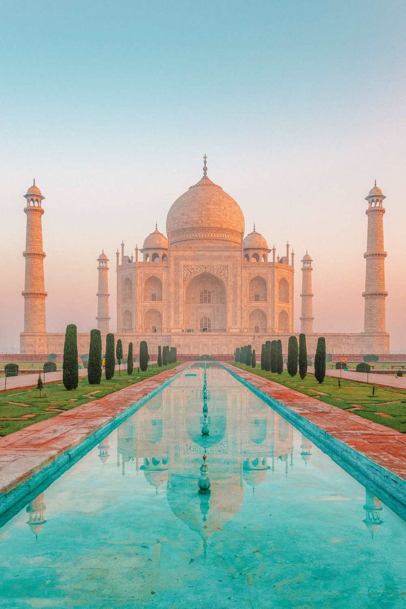

The Taj Mahal
OVER SIX MILLION VISITORS IN 2016
The Taj Mahal is one of the crowning architectural
achievements of the Mughal empire, which ruled most of
the Indian subcontinent from 1526 to 1761. It took around
20,000 workers and 16 years to build. The building reflects
the Mughal architectural style, stressing symmetry and
balance. In recent years, restoration efforts have been
focused on protecting the ivory marble facades from pollution.